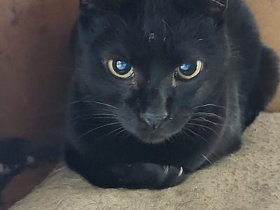
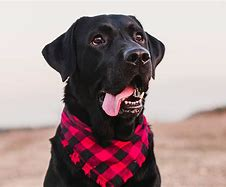

Como Adotar um Amigo Resgacti
Adotar um pet é um gesto de amor que transforma vidas! Conheça nosso processo simples e responsável:
- Conheça nossos pets: Navegue pela nossa página e descubra os animais incríveis que estão prontos para encontrar um lar.
- Preencha o formulário de interesse: Se você se apaixonou por algum deles, o próximo passo é preencher nosso formulário de interesse em adoção. Você o encontrará aqui!
- Entrevista com nossa equipe: Nossa equipe entrará em contato para agendar uma breve entrevista. Queremos garantir que o novo lar seja perfeito para o pet.
- Visita ao pet (se aplicável): Em alguns casos, organizamos uma visita para que você possa conhecer o animal pessoalmente.
- Assinatura do termo de adoção: Após a aprovação, você assinará o termo de adoção, formalizando esse lindo encontro.
- Período de adaptação: Acompanhamos o período inicial para garantir que todos estejam felizes e seguros.
Lembre-se: a adoção é um compromisso de longo prazo que envolve carinho, responsabilidade, vacinação e cuidados veterinários regulares.
Histórias de Sucesso: Nossos Aumigos Adotados!
Veja alguns dos nossos resgatados que encontraram lares amorosos e aquecem nossos corações com suas novas famílias:
Bolinha
Era: Pequeno
Idade na adoção: 9 anos
Temperamento: Brincalhão, amoroso
Adotado em: 15/03/2025
Estrela
Era: Pequeno
Idade na adoção: 6 anos
Temperamento: Calma, companheira
Adotada em: 01/04/2025
Max
Era: Grande
Idade na adoção: 3 anos
Temperamento: Enérgico, leal
Adotado em: 20/04/2025
Dê o primeiro passo para uma adoção feliz!